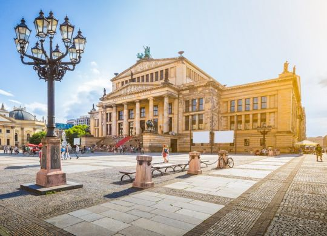
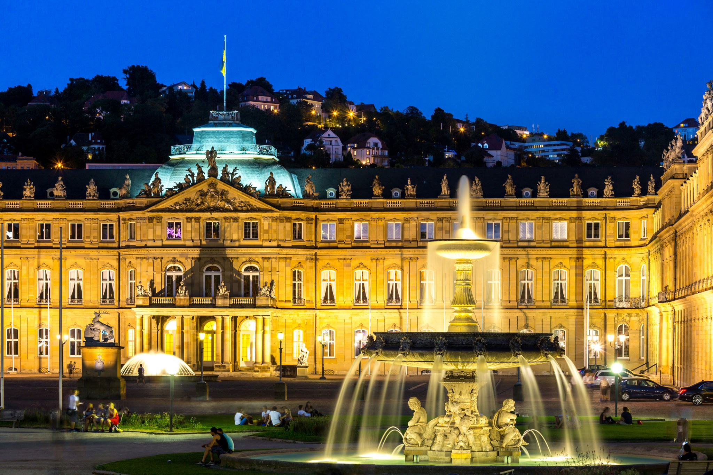
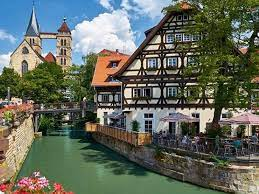

Німеччина воістину невичерпна скарбниця, перераховувати її пам'ятки та красоти можна майже нескінченно.
Сьогодні ми публікуємо міні-гайд найкрасивішими великими містами цієї батьківщини казок, музики та науки.



Гейдельберг
Це не тільки важливий науковий центр Німеччини, але і просто гарне місто. Атмосфера романтики тут всюди: в обрисах старого Гейдельберзького замку, в архітектурі міських будівель, дивом уцілілих під час війни, і навіть в міській панорамі, що відкривається зі Старого мосту і Стежки Філософів.
Житло: середня вартість двомісного номера в готелі 3* — від €70, 5* – від €150.
Переліт: щоб дістатися до Гейдельберга, найвигідніше летіти до Франкфурта, а звідти продовжити шлях наземним сполученням.
Лейпциг
Лейпциг — справжня знахідка для тих, хто хотів би поєднати культурний відпочинок і розваги. Крім класичних барів і пивних, яких тут безліч і на будь-який смак, Лейпциг багатий історичною спадщиною. Це і старовинні маєтки німецької знаті, і будинки-музеї Мендельсона, Шумана і Баха, і комплекс Грассі, в якому ви відвідаєте відразу три музеї (етнографічний, Музей музичних інструментів та Музей прикладного мистецтва) і, звичайно, чудові парки Розенталь і Ауэнвальд.
Житло: середня вартість двомісного номера в готелі 3* — від €100, 5* – від €170
Переліт: щоб потрапити у Лейпциг, вам знадобиться аеропорт Лейпциг-Галле, що знаходиться в місті Шкойдиц. Звідти до самого Лейпцига можна легко дістатися на поїзді менш ніж за півгодини.
Кельн
ут все дихає історією: чудові готичні і барочні будівлі, старовинні церкви і середньовічні монастирі, руїни часів Римської імперії — Кельн буде дивувати вас знову і знову!
Житло: середня вартість двомісного номера в готелі 3* — від €75, 5* – від €140.
Переліт: Міжнародний аеропорт Кельн-Бонн знаходиться в передмісті Кельна — Порц, так що дістатися туди можна приміською електричкою.